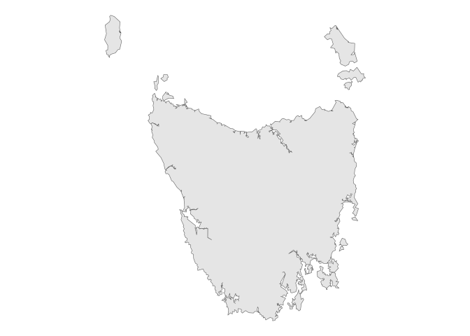
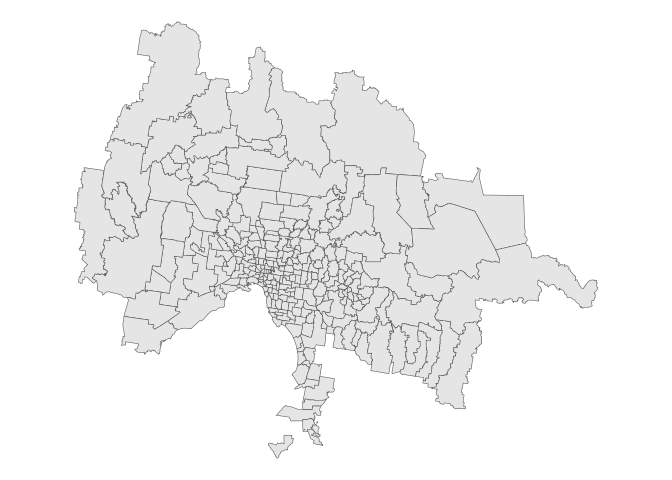

ozgs fetches and caches sf geometries and data from the Australian Statistical Geography Standard (ASGS) web service.
Installation
You can install the development version of ozgs from GitHub with:
# install.packages("devtools")
devtools::install_github("gardiners/ozgs")Or from r-universe with:
install.packages('ozgs', repos = c('https://gardiners.r-universe.dev',
'https://cloud.r-project.org'))Available geometries
Every geometry published by the ABS in every edition of the ASGS (1, 2 or 3) is currently available in ozgs.
These include the Indigenous Structure, Statistical Areas (SA1, SA2, SA3 and SA4), states and territories, postcode approximations (POAs), suburbs and localities, local government areas (LGAs), state and federal electoral divisions, the Remoteness Structure and the mesh blocks from which each of these are constructed.
Caching
Requests are cached to avoid repeatedly fetching data from the ABS servers. By default, ozgs creates a simple memory cache using cachem::cache_mem(), which persists for your current R session. To persistently store ASGS geometries locally (or elsewhere), you can use any cachem-compatible cache function.
Usage examples
Get Tasmania’s boundaries from the STE (State and Territory) geography defined in the 1st edition of the ASGS:
library(ozgs)
library(ggplot2)
tas <- ste("Tasmania", edition = 1)
theme_set(theme_void())
ggplot(tas) +
geom_sf()
Get every postcode in Greater Melbourne:
melbourne_gccsa <- gccsa("Greater Melbourne", edition = 3)
melbourne_poa <- poa(edition = 3, filter_geom = melbourne_gccsa$geometry)
#> ! `filter_geom` cannot be a "MULTIPOLYGON" geometry.
#> ℹ Using `sf::st_union()` and `sf::st_cast()` to create a "POLYGON" for
#> `filter_geom`.
ggplot(melbourne_poa) +
geom_sf()
You can store cached geometries within your working directory for reuse in other sessions. This is especially helpful if you’re working in RMarkdown or Quarto, which start a fresh session on each render.
project_cache <- cachem::cache_disk("./readme_cache")
aus <- get_geography("AUS", edition = 3, cache = project_cache)Or, set ozgs.cache as an option for use everywhere in your R script, with the same effect:
options("ozgs.cache" = cachem::cache_disk("./readme_cache"))
aus <- get_geography("AUS", edition = 3)